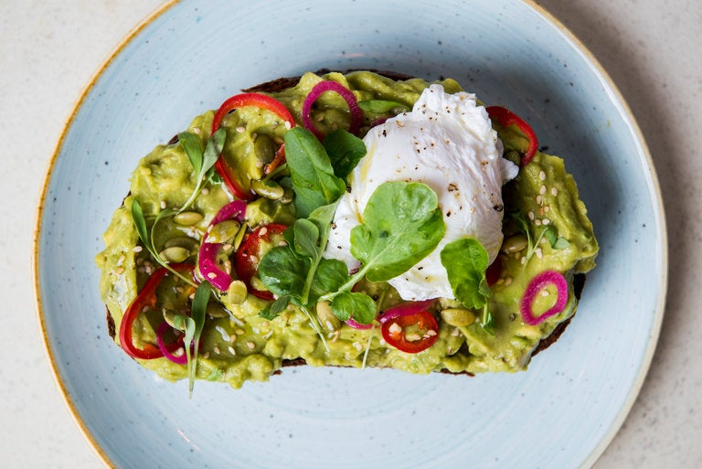

Avocado Toast

Quick and simple!
Within five minutes, you will be in heaven with this breakfast favorite.
Ingredients:
- 2 large slices crusty, chewy sourdough bread, preferably whole wheat
- 1 ripe avocado, halved, pit removed
- Extra-virgin olive oil
- Flaky salt and coarsely ground black pepper
- Half a lemon or lime
Optional Garnishes:
- Poached or fried eggs
- Thinly sliced pickled or fresh red chiles, such as Fresno or cherry
- Thinly sliced pickled red onions
- Pepitas (pumpkin seeds) or sesame seeds, or both
- Herbs, such as basil, cilantro, mint or baby arugula
Steps:
- Toast the bread to your liking. Meanwhile, use a wide spoon to remove the avocado halves from the peel, keeping them in large pieces.
- Drizzle the hot toast lightly with olive oil and sprinkle with salt. Let cool slightly, then place one avocado half on each slice of toast. Use the back of a fork to roughly mash the avocado into the bread, keeping it as chunky as possible.
- Sprinkle with a little more salt, and pepper if desired. Squeeze the citrus over the top and add any garnishes. Cut each piece of toast in half if they're large and serve immediately.